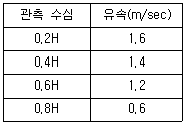
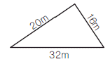
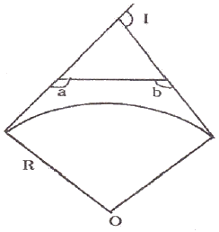
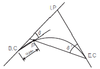
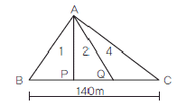
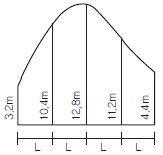
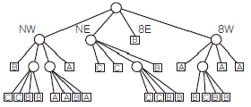
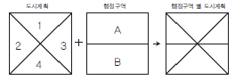
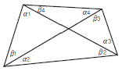

측량및지형공간정보산업기사 (2013-03-10 기출문제)
1과목: 응용측량
1. 하천측량에서 수심 H인 하천의 깊이에 따른 관측 유속이 표와 같을 때, 3점법에 의한 평균유속은?

- 1.40m/sec
- 1.25m/sec
- 1.20m/sec
- 1.15m/sec
(정답률: 71%)

2. 그림과 같은 삼각형 모양의 지역의 면적은?

- 130.9m2
- 160.0m2
- 256.3m2
- 320.0m2
(정답률: 79%)
3. 단곡선을 설치하기 위한 조건 중 곡선시점(B.C)의 좌 표 가 XB.C=1000.500m, YB.C=200.400m이고, 곡선반지름(R)이 300m, 교각(I)이 70°일 때, 곡선시점(B.C)으로부터 교점(I.P)에 이르는 방위각이 123° 13′ 12″ 일 경우 원곡선 종점(E.C)의 좌표는?
- XEC = 680.921m, YEC = 328.093m
- XEC = 328.093m, YEC = 828.093m
- XEC = 1233.966m, YEC = 433.766m
- XEC = 1344.666m, YEC = 544.546m
(정답률: 30%)
4. 도로 설계에서 클로소이드곡선의 매개변수(A)를 2배 늘리면 같은 곡선반지름에서 클로소이드곡선의 길이는 몇 배가 늘어나겠는가?
- 2배
- 4배
- 6배
- 8배
(정답률: 80%)
5. 교점의 위치가 기점으로부터 330.543m, 곡선반지름 R=250m, 교각 I = 43° 25′ 30″인 단곡선을 편각법으로 측설하고자 할 때 시단현에 대한 편각은? (단, 중심말뚝의 간격=20m)
- 1° 10′ 26″
- 1° 0′ 52″
- 1° 1′ 56″
- 1° 15′ 35″
(정답률: 62%)
6. 하천 측량에 있어 횡단도 작성에 필요한 측량은?
- 유량관측
- 평면측량
- 유속측량
- 심천측량
(정답률: 69%)
7. 터널 내의 곡선 설치법으로 적당한 것은?
- 편각현장법
- 중앙종거법
- 현편거법
- 전방교선법
(정답률: 43%)
8. 단곡선 설치에서 교각(I)을 측정하지 못하여 그림과 같이 ∠a, ∠b를 관측하여, ∠a =100°, ∠b = 130° 이었다면 교각(I)는?

- 50°
- 100°
- 130°
- 230°
(정답률: 56%)
9. 수로측량에서 선박의 안전통항을 위한 교량 및 가공선의 높이를 결정하기 위한 기준면으로 사용되는 것은?
- 약최고고조면
- 기본수준면
- 소조의 평균저조면
- 대조의 평균저조면
(정답률: 64%)
10. 100m2 정방형 토지의 면적을 0.1m2까지 정확하게 구하기 위해 요구되는 한 변의 길이의 관측에 대한 설명으로 옳은 것은?
- 한 변의 길이를 1㎝까지 정확하게 읽어야 한다.
- 한 변의 길이를 1㎜까지 정확하게 읽어야 한다.
- 한 변의 길이를 5㎝까지 정확하게 읽어야 한다.
- 한 변의 길이를 5㎜까지 정확하게 읽어야 한다.
(정답률: 39%)
11. 그림과 같이 단곡선의 첫번째 측점 P를 측설 하기 위하여 E.C에서 관측할 각도(δ′)는? (단, 교각 I=60°, 곡선 반지름 R=100m, 중심말뚝간격=20m, 시단현의 거리 = 13.96m)

- 24°
- 25°
- 26°
- 27°
(정답률: 21%)
12. 터널측량 중 현장에서 중심선을 설정하고 터널 입구의 위치를 결정하는 작업은?
- 답사
- 지하설치
- 지표설치
- 예측
(정답률: 58%)
13. 지중레이다(Ground Penetration Radar : GPR) 탐사기법은 전자파의 어떤 성질을 이용하는가?
- 방사
- 반사
- 흡수
- 산란
(정답률: 70%)
14. 그림과 같이 삼각형의 정점 A에서 직선 AP, AQ로 ΔABC의 면적을 1:2:4로 분할하려면 BP, BQ의 길이를 각각 얼마로 하면 되는가?

- 10m, 30m
- 10m, 60m
- 20m, 40m
- 20m, 60m
(정답률: 54%)
15. 클로소이드에 관한 설명으로 옳지 않은 것은?
- 클로소이드는 나선의 일종이다.
- 클로소이드는 종단곡선으로 주로 활용된다.
- 모든 클로소이드는 닮은꼴이다.
- 클로소이드는 곡률이 곡선의 길이에 비례하여 증가하는 곡선이다.
(정답률: 66%)
16. 수면으로부터 수심 3/5인 곳에 수중부자를 가라 앉혀서 직접 평균유속을 구할 때 사용되는 부자는?
- 표면부자
- 이중부자
- 봉부자
- 막대부자
(정답률: 41%)
17. 토적곡선(mass curve)에 의한 토량계산에 대한 설명으로 옳지 않은 것은?
- 곡선은 누가토량의 변화를 표시하는 것이고, 그 경사가 (-)는 깍기 구간, (+)는 쌓기 구간을 의미한다.
- 측점의 토량은 양단면평균법으로 계산할 수 있다.
- 곡선의 극소점은 쌓기 구간에서 깎기 구간으로 변하는 점을 의미한다.
- 토적곡선을 활용하여 토공의 평균운반거리를 계산할 수 있다.
(정답률: 73%)
18. 그림과 같은 면적을 심프슨의 제 1법칙과 사다리꼴 법칙에 의하여 계산하였다. 이 때 2개의 법칙에 의하여 구한 면적의 차이는? (단, L=5m)

- 12m2
- 10m2
- 8m2
- 6m2
(정답률: 35%)
19. 음향측심기를 이용하여 수심을 측정하였다. 수심측정값으로 옳은 것은? (단, 수중음속 1510m/s, 음파송신수신시간 0.2초)
- 151m
- 302m
- 604m
- 7550m
(정답률: 56%)
20. 급경사가 되어 있는 터널 내의 트래버스 측량에 있어서 정밀한 측각을 위해 가장 적절한 방법은?
- 방위각법
- 배각법
- 편각법
- 단각법
(정답률: 62%)
2과목: 사진측량 및 원격탐사
21. 촬영 방향에 의해 사진을 분류할 경우 수직사진과 경사사진의 일반적 한계는?
- ±3°
- ±8°
- ±10°
- ±15°
(정답률: 56%)
22. 대공표지에 대한 설명으로 옳은 것은?
- 사진의 네 모서리 또는 네 변의 중앙에 있는 표지
- 평균해수면으로부터 높이를 정확히 구해 놓은 고정된 표지나 표식
- 항공사진에 표정용 기준점의 위치를 정확하게 표시하기 위하여 촬영 전에 지상에 설치한 표지
- 삼각점, 수준점 등의 기준점의 위치를 표시하기 위하여 돌로 설치된 측량표지
(정답률: 78%)
23. 어떤 항공사진상에 실제길이 150m의 교량이 5㎜로 나타났다면 이 사진에 포함되는 실 면적은? (단, 사진크기 = 23㎝ × 23㎝)
- 15.87km2
- 47.61km2
- 158.7km2
- 476.1km2
(정답률: 47%)
24. 디지털 영상에서 사용되는 비트맵 그래픽 형식이 아닌 것은?
- BMP
- DWG
- JPEG
- TIFF
(정답률: 76%)
25. 여러 시기에 걸쳐 수집된 원격탐사 데이터로부터 이상적인 변화탐지 결과를 얻기 위한 가장 중요한 해상도로 옳은 것은?
- 주기 해상도(temporal resolution)
- 방사 해상도(radiometric resolution)
- 공간 해상도(spatial resolution)
- 분광 해상도(spectral resolution)
(정답률: 59%)
26. 어느 높이에서 촬영한 연직사진(A)과 그 2배의 높이에서 동일 카메라로 촬영한 연직사진(B)의 관계에 대하여 설명한 것으로 옳지 않은 것은? (단, 사진의 중복도는 모두 60%이다.)
- 한 장의 사진에 촬영된 면적은 (B)가 (A)의 4배이다.
- 사진상에 동일 위치에 찍힌 동일 높이인 산정(山頂)의 비고에 의한 변위는 (B)가 (A)보다 크다.
- 평지의 사진축척은 (A)가 (B)의 2배이다.
- (A)가 (B)보다 비고의 정밀도가 우수하다.
(정답률: 37%)
27. 일반카메라와 비교할 때, 항공사진측량용 카메라의 특징에 대한 설명으로 옳지 않은 것은?
- 렌즈의 왜곡이 극히 적다.
- 해상력과 선명도가 높다.
- 렌즈의 피사각이 크다.
- 초점거리가 짧다.
(정답률: 74%)
28. 수치표고모형(Digital Elevation Model)의 활용분야가 아닌 것은?
- 가시권 분석
- 토공량 산정
- 소음전파분석
- 토지피복분류
(정답률: 57%)
29. 다음 탐측기(Sensor)의 종류 중 능동적 탐측기(active sensor)에 해당되는 것은?
- RBV(Return Beam Vidicon)
- MSS(Multi Spectral Scanner)
- SAR(Synthetic Aperture Radar)
- TM(Thematic Mapper)
(정답률: 64%)
30. 해석적 내부표정에서의 주된 작업내용은?
- 관측된 상 좌표로부터 사진 좌표로 변환하는 작업
- 3차원 가상 좌표를 계산하는 작업
- 1개의 통일된 블록 좌표계로 변환하는 작업
- 표고결정 및 경사를 결정하는 작업
(정답률: 58%)
31. 원격탐사(Remote Sensing)에 대한 설명으로 틀린 것은?
- 인공위성에 의한 원격탐사는 짧은 시간 내에 넓은 지역을 동시에 관측할 수 있다.
- 다중 파장대에 의하여 자료를 수집하므로 원하는 목적에 적합한 자료의 취득이 용이하다.
- 관측자료가 수치적으로 기록되어 판독이 자동적이며, 정성적 분석이 가능하다.
- 반복 측정은 불가능하나 좁은 지역의 정밀 측정에 적당하다.
(정답률: 76%)
32. 조정집성 사진지도(controlled mosaic photomap)에 대한 설명으로 옳은 것은?
- 카메라의 기울어짐에 따른 변위, 지면의 비고에 따른 변위의 두 변위를 일체 수정하지 않고 사진을 이용하여 만든 사진지도
- 편위수정기에 의해 편위를 일부만 수정하여 집성한 사진지도
- 편위 수정된 항공사진으로 만들어진 집성사진지도
- 지형의 기복에 따라 생긴 항공사진의 왜곡을 보정하고 일정한 규격으로 집성하여 좌표 및 주기 등을 기입한 사진지도
(정답률: 29%)
33. 공간 상의 임의의 점, 그에 대응하는 사진 상의 점, 사진기의 촬영중심이 동일한 직선 상에 있어야 한다는 조건은?
- 공선조건
- 공면조건
- 공액조건
- 공점조건
(정답률: 65%)
34. 해석 도화기로 할 수 없는 작업은?
- 사진좌표 측정
- 정사영상 제작
- 수치지도 작성
- 항공삼각측량
(정답률: 35%)
35. N 차원의 피처공간에서 분류될 화소로부터 가장 가까운 훈련자료 화소까지의 유클리드 거리를 계산하고 그것을 해당 클래스로 할당하여 영상을 분류하는 방법은?
- 최근린 분류법(nearest-neighbor classifier)
- k-최근린 분류법(k-nearest-neighbor classifier)
- 최장거리 분류법(maximum distance classifier)
- 거리가중 K-최근린 분류법(k-nearestneighbor distance-weighted classifier)
(정답률: 72%)
36. 축척 1:20000의 엄밀수직사진에서 지상사진 주점으로부터 1000m 떨어진 곳에 있는 높이 50m인 철탑의 사진상 기복변위량은? (단, 사진은 광학사진으로 초점거리는 150㎜이다.)
- 0.21㎜
- 0.42㎜
- 0.83㎜
- 1.68㎜
(정답률: 19%)
37. 축척 1:10000으로 표고 200m의 평탄한 토지를 촬영한 항공사진의 촬영 기선길이는? (단, 사진크기 = 23㎝ × 23㎝, 중복도 65%)
- 1400m
- 1150m
- 920m
- 8⑤m
(정답률: 43%)
38. 극초단파(microwave)의 도플러 효과를 이용해 공간자료를 수집하는 센서는?
- LIDAR
- SAR
- RBV
- MSS
(정답률: 43%)
39. 지상길이 100m의 교량이 있다. 초점거리 150㎜의 항공사진 촬영용 카메라로 비행고도 3000m에서 촬영하였을 때 수직사진 상에 나차난 교량의 길이는?
- 0.2㎜
- 0.5㎜
- 2.0㎜
- 5.0㎜
(정답률: 38%)
40. 비행고도가 동일할 때 보통각, 광각, 초광각의 세 가지 카메라로 촬영할 경우 사진축척이 가장 작게 결정되는 것은?
- 초광각사진
- 광각사진
- 보통각사진
- 모두 동일
(정답률: 75%)
3과목: GIS 및 GPS
41. 데이터베이스의 형태에 속하지 않는 것은?
- 관계 구조
- 입체 구조
- 계층 구조
- 조직망 구조
(정답률: 47%)
42. 다음 벡터식 자료구조 중 선사상이 아닌 것은?
- 점(Point)
- 아크(Arc)
- 체인(Chain)
- 스트링(String)
(정답률: 31%)
43. GPS측량방법 중 이동국 GPS관측점에서 위성신호를 처리한 성과와 기지국 GPS에서 송신된 위치자료를 수신하여 이동지점의 위치좌표를 바로 구할 수 있는 측량방법은?
- 정지식 GPS방법
- 후처리 GPS방법
- 역정밀 GPS방법
- 실시간 이동식 GPS방법
(정답률: 64%)
44. 공간정보를 기반으로 고객의 수요특성 및 가치를 분석하기 위한 방법으로 고객정보에 주거형태, 주변상권 등 지리적 요소를 포함시켜 고객의 거주 혹은 활동 지역에 따라 차별화된 서비스를 제공하기 위한 전략으로 금융 및 유통업 분야에서 주로 도입하여 GIS 마케팅 분석 등에 활용되고 있는 공간정보 활용의 한 분야는?
- gCRM(geographic customer relationship management)
- LBS(location based service)
- Telematics
- SDW(spatial data warehouse)
(정답률: 59%)
45. 항공기에서 레이저 파를 발사한 후 돌아오는 시간을 이용하여 대상지역의 정밀한 수치표고모델(DEM)을 제작할 수 있는 방법을 무엇이라 하는가?
- GPS-INS 측량
- 라이다(Lidar) 측량
- 영상 자동매칭 방법
- 레이더(Radar) 간섭 측량
(정답률: 59%)
46. 그림의 2차원 쿼드트리(quadtree)의 총 면적은 얼마인가? (단, 최하단에서 하나의 셀의 면적을 1로 가정한다.)

- 16
- 25
- 64
- 128
(정답률: 39%)
47. 오픈 소프트웨어(open source software)에 대한 설명으로 옳지 않은 것은?
- 일반 사용자에 의해서 소스코드의 수정과 재배포가 가능하다.
- 전문 프로그래머가 아닌 일반 사용자도 개발에 참여할 수 있다.
- 사용자 인터페이스가 상업용 소프트웨어에 비해 우수한 것이 특징이다.
- 소스코드가 제공됨으로써 자료처리 과정을 명확하게 이해할 수 있는 장점이 있다.
(정답률: 65%)
48. 지리정보시스템구축에 필요한 위치정보의 자료취득방법으로 알맞은 것은?
- GIS
- GPS
- PC
- TIN
(정답률: 50%)
49. 지리정보시스템의 필요성과 관계가 없는 것은?
- 자료 중복 조사 및 분산관리를 하기 위한 측면
- 행정환경 변화의 수동적 대응을 하기 위한 측면
- 통계담당 부서와 각 전문부서 간의 업무의 유기적 관계를 갖기 위함
- 시간적, 공간적 자료의 부족, 개념 및 기준의 불일치로 인한 신뢰도 저하를 해소하기 위한 측면
(정답률: 33%)
50. 그림과 같이 도시계획 레이어와 행정구역 레이어를 중첩분석한 결과를 얻었다. 어떤 중첩 분석 방법을 적용하여야 하는가?

- Union
- Append
- Difference
- Buffer
(정답률: 49%)
51. GIS에서 다루어지는 지리정보의 특성이 아닌것은?
- 위치정보를 갖는다.
- 위치정보와 함께 관련 속성정보를 갖는다.
- 공간객체 간에 존재하는 공간적 상호관계를 갖는다.
- 시간이 흘러도 변하지 않는 영구성을 갖는다.
(정답률: 64%)
52. 모자이크방식(tessellation) 분할에 대한 설명으로 옳지 않은 것은?
- 빠르고 쉬운 알고리즘을 적용할 수 있다.
- 대상지역을 규칙적인 형태로 분할하는 방식이다.
- 위치가 정확하게 표현된다.
- 동일한 형태를 표현할 경우 대부분 자료량이 늘어난다.
(정답률: 40%)
53. GPS 오차의 종류가 아닌 것은?
- 관성오차
- 위성 시계오차
- 대기조건에 의한 오차
- 다중전파경로에 의한 오차
(정답률: 40%)
54. 주어진 연속지적도에서 본인 소유의 필지와 접해있는 이웃 필지의 소유주를 알고 싶을 때에 필지간의 위상관계 중에 어느 관계를 이용하는가?
- 포함성
- 일치성
- 인접성
- 연결성
(정답률: 58%)
55. 위성에서 송출된 신호가 수신기에 하나 이상의 경로를 통해 수신될 때 발생하는 현상을 무엇이라 하는가?
- 전리층 편의
- 대류권 지연
- 다중경로
- 위성궤도 편의
(정답률: 66%)
56. GPS에 대한 설명으로 옳지 않은 것은?
- GPS는 우주부분, 제어부분, 사용자부분으로 구성되어 있다.
- 궤도면은 적도에 대해 65° 기울어져 있으며 지표면으로부터 약 20,200㎞ 상공이다.
- 위성에서 송출되고 있는 전파는 반송파(carrier wave)와 코드(code)가 있다.
- 반송파에는 L1, L2가 있으며 코드에는 C/A와 P코드가 있다.
(정답률: 60%)
57. 컴포넌트(Component) GIS의 특징에 대한 설명으로 옳지 않은 것은?
- 확장 가능한 구조이다.
- 분산 환경을 지향한다.
- 특정 운영환경에 종속되지 않는다.
- 인터넷의 www(world wide web)와 통합된 것을 의미한다.
(정답률: 56%)
58. TIN(triangulated irregular networks)의 특징이 아닌 것은?
- 연속적인 표면을 표현하는 방법으로 부정형의 삼각형으로 이루어진 모자이크 식으로 표현한다.
- 벡터 데이터 모델로 추출된 표본 지점들이 x, y, z 값을 가지고 있다.
- 표본점으로부터 삼각형의 네트워크를 생성하는 방법은 대표적으로 델로니(Delaunay) 삼각법이 사용된다.
- TIN자료모델에는 각 점과 인접한 삼각형들 간에 위상관계(topology)가 형성되지 않는다.
(정답률: 59%)
59. 메타데이터(Metadata)에 대한 설명으로 옳지 않은 것은?
- 공간데이터와 관련된 일련의 정보를 제공해 준다.
- 자료의 생산, 유지 관리하는데 필요한 정보를 제공해준다.
- 대용량 공간 데이터를 구축하는데 드는 엄청난 비용과 시간을 절약해 준다.
- 공간데이터 제작자와 사용자 모두 표준용어와 정의에 동의하지 않아도 사용할 수 있다.
(정답률: 59%)
60. 객체 사이의 인접성, 연결성에 대한 정보를 포함하는 개념은?
- 위치정보
- 속성정보
- 위상정보
- 영상정보
(정답률: 54%)
4과목: 측량학
61. 삼각측량에서 삼각형의 내각 관측결과 ∠A=55° 12′ 20″, ∠B=35° 23′ 40″, ∠C=89° 24′ 30″ 이었다면 각 각의 최확값으로 옳은 것은?
- ∠A=55° 12′ 20″, ∠B=35° 23′ 40″, ∠C=89° 24′ 10″
- ∠A=55° 12′ 15″, ∠B=35° 23′ 35″, ∠C=89° 24′ 10″
- ∠A=55° 12′ 15″, ∠B=35° 23′ 20″, ∠C=89° 24′ 25″
- ∠A=55° 12′ 10″, ∠B=35° 23′ 30″, ∠C=89° 24′ 20″
(정답률: 55%)
62. 오차 중에서 최소제곱법의 원리를 이용하여 처리할 수 있는 것은?
- 누적오차
- 우연오차
- 정오차
- 착오
(정답률: 45%)
63. 수평각을 관측할 경우 만원경을 정(正) 및 반(反)위 상태로 관측하여 평균값을 취해도 소거되지 않는 오차는?
- 망원경 편심오차
- 수평축오차
- 시준축오차
- 연직축오차
(정답률: 61%)
64. 등고선의 성질에 대한 설명으로 옳지 않은 것은?
- 동일 등고선상의 모든 점은 기준면상 같은 높이에 있다.
- 등고선은 하천, 호수, 계곡 등에서는 단절되고, 도상에서는 폐합되지 않는다.
- 등고선은 최대 경사선에 직각이 되고, 분수선 및 계곡선에 직교한다.
- 동일 경사 지면에서 서로 이웃한 등고선의 간격은 일정하다.
(정답률: 60%)
65. 두 지점의 경사거리 100m에 대한 경사 보정이 1㎝일 경우 두 지점 간의 높이 차는?
- 1.414m
- 2.414m
- 14.14m
- 24.14m
(정답률: 44%)
66. 지반고 145.25m의 A 지점에 토털스테이션을 1.25m 높이로 세워 사거리 172.30m, B지점의 타겟 높이 1.85m를 시준하여 연직각 –25° 11′을 얻었다. B 지점의 지반고는?
- 71.33m
- 75.03m
- 217.97m
- 221.67m
(정답률: 25%)
67. 1:50000 지형도에서 4% 경사의 노선을 선정하려 한다. 주곡선 사이에 취해야 할 도상거리는?
- 100㎜
- 50㎜
- 10㎜
- 5㎜
(정답률: 38%)
68. 다음 설명 중 옳지 않은 것은?
- 삼각측량에서 삼각점은 정삼각형에 가까운 형태로 한다.
- 하천측량을 실시하는 주목적은 각종 설계시공에 필요한 자료를 얻기 위함이다.
- 각측량에서 배각법은 방향각법과 비교하여 읽음오차의 영향을 크게 받는다.
- 전자유도측량방법은 지하매설물 측량기법의 한 종류이다.
(정답률: 32%)
69. 등경사선 지형에서 축척 1:1000, 등고선간격 1m, 제한경사를 5%로 할 때, 각 등고선상의 도상거리는?
- 1㎝
- 2㎝
- 5㎝
- 10㎝
(정답률: 23%)
70. 직선 AB를 2개 구간(d1, d2)으로 나누어 거리를 측정한 결과가 d1=50.12m±0.⑤m, d2=45.67m±0.04m 이었다면 직선 AB간의 거리는?
- 95.79m±0.01m
- 95.79m±0.03m
- 95.79m±0.06m
- 95.79m±0.09m
(정답률: 35%)
71. 삼각측량에서 그림과 같은 사변형망의 각조건식 수는?

- 1개
- 2개
- 3개
- 4개
(정답률: 48%)
72. 다음 설명 중 옳지 않은 것은?
- 방향각은 도북을 기준으로 한 시계방향의 각으로 표현한다.
- 방위각은 진북을 기준으로 한 시계방향의 각으로 표현한다.
- 방향각과 방위각은 X좌표축 상에서만 일치한다.
- 자침편차는 자북방향을 기준으로 진북방향의 편차를 나타낸다.
(정답률: 28%)
73. 국가 수준기준면과 수준원점의 관계에 대한 설명으로 옳지 않은 것은?
- 국가 수준기준면과 수준원점은 일치한다.
- 제주도와 같은 섬에서는 독립된 기준면을 사용하기도 한다.
- 국가 수준기준면으로부터 정확한 표고를 측정하여 수준원점을 설치한다.
- 평균해면을 관측하여 국가 수준기준면을 만든다.
(정답률: 38%)
74. 다각측량에서 측량순서로 옳은 것은?
- 답사 - 선점 - 조표 - 관측
- 답사 - 조표 - 선점 - 관측
- 선점 - 답사 - 조표 - 관측
- 선점 - 조표 - 답사 - 관측
(정답률: 64%)
75. 공공측량시행자는 측량을 하기 위하여 작업계획서를 작업을 시행하기 몇 일전까지 제출하여야 하는가?(관련 규정 개정전 문제로 여기서는 기존 정답인 3번을 누르면 정답 처리됩니다. 자세한 내용은 해설을 참고하세요.)
- 7일
- 15일
- 30일
- 90일
(정답률: 50%)
76. 기본측량의 측량성과 고시에 포함되어야 하는 사항이 아닌 것은?
- 측량의 종류
- 측량성과의 보관 장소
- 설치한 측량기준점의 수
- 사용 측량기기의 종류 및 성능
(정답률: 36%)
77. 해양의 수심·지구자기·중력·지형·지질의 측량과 해안선 및 이에 딸린 토지의 측량으로 정의되는 것은?(오류 신고가 접수된 문제입니다. 반드시 정답과 해설을 확인하시기 바랍니다.)
- 수로측량
- 공공측량
- 수로조사
- 해안측량
(정답률: 25%)
78. 지리학적 경위도, 직각좌표, 지구중심 직교좌표, 높이 및 중력 측정의 기준으로 사용하기 위하여 위성기준점, 수준점 및 중력점을 기초로 정한 기준점은?
- 통합기준점
- 경위도원점
- 지자기점
- 삼각점
(정답률: 57%)
79. 측량기술자에 대한 설명으로 옳지 않은 것은?
- 측량기술자는 다른 사람에게 자기의 성명을 사용하여 측량업무를 수행하게 하여서는 아니된다.
- 지적, 지도제작, 도화 또는 항공사진 분야의 일정한 학력만을 가진 자는 측량기술자로 볼 수 없다.
- 측량기술자는 신의와 성실로써 공정하게 측량을 실시해야 하며 정당한 사유 없이 측량을 거부하여서는 아니된다.
- 측량기술자는 둘 이상의 측량업체에 소속될 수 없다.
(정답률: 62%)
80. 성능검사를 받아야 하는 측량기기 중 금속관로탐지기의 성능검사 주기로 옳은 것은?
- 1년
- 2년
- 3년
- 5년
(정답률: 65%)